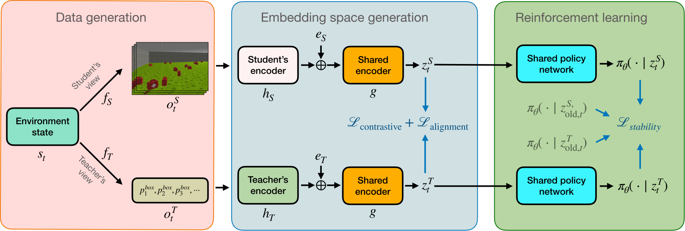
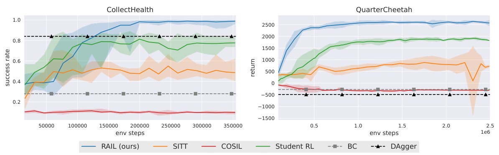

Abstract
Reinforcement learning (RL) from raw sensory inputs such as images or onboard sensors can be challenging due to high-dimensional observations and sparse rewards. A common strategy is to train a teacher policy with access to privileged state information and then distill it into a student policy that acts from raw inputs alone. However, when the teacher relies on information unavailable to the student, exact imitation may be impossible. This creates an irreducible imitation gap. Existing approaches typically mitigate this mismatch through careful reward shaping or additional reinforcement learning on the student policy after the teacher has been trained. Instead, we introduce Representation-Aligned Imitation Learning (RAIL), which addresses the mismatch during teacher training itself. RAIL learns a latent representation shared across teacher and student observations using contrastive learning, and trains the teacher policy directly in this space. Because the teacher policy is constrained to operate on this shared space, it learns behaviors that are reproducible from student observations. This substantially reduces the imitation gap while preserving task performance. Across multiple environments, RAIL outperforms strong baselines without reward modification or post-hoc student fine-tuning, and surpasses direct reinforcement learning from raw observations. The learned representations further enable zero-shot transfer to new tasks through teacher-only training.
Method
Teacher and student encoders map paired observations into a shared latent space, trained with three objectives:
- Contrastive learning retains information shared by teacher and student.
- Alignment brings paired embeddings together for policy transfer.
- Stability regularizes policy outputs as the representation evolves.
PPO trains the shared policy on teacher embeddings, with policy gradients stopped at the encoders. At deployment, the student encoder replaces the teacher encoder.
Experiments
We evaluate RAIL in four simulation environments with asymmetric teacher and student observations. The RAIL teacher and student use the same policy with their respective encoders.
Teachers trained with RAIL adapt their behavior to the student’s capabilities. By learning to act on shared information, the teacher develops strategies that the student can reproduce from its own observations.
TunnelVision
The agent must reach the goal while avoiding obstacles. The teacher observes all neighboring cells, while the student sees only three cells in its current direction and must turn to discover obstacles.
The RL teacher can avoid obstacles without looking around, but the BC student cannot reliably copy those moves with its limited view. The RAIL teacher learns to turn and check its surroundings, so the student can follow the same route.
Corners
The agent must find a hidden target corner. The teacher knows the target corner, while the student observes only its position and previous action and must search for the target.
The RL teacher knows which corner contains the target and moves straight toward it. The BC student does not know the target location, so it cannot tell which of the teacher’s actions to follow. With RAIL, the teacher learns to search the corners, which the student can do without knowing the target.
CollectHealth
The agent must collect all health boxes while avoiding walls. The teacher receives the relative coordinates of all remaining boxes, while the student acts from five stacked first-person RGB observations with a limited field of view.
The RL teacher heads toward health boxes even when they are outside the student’s view. The student cannot tell where the teacher is headed from its camera images. The RAIL teacher learns to bring boxes into view before it approaches them, so the student can locate them too.
QuarterCheetah
The agent must run forward as fast as possible. The teacher receives joint positions and velocities, while the student acts from third-person RGB observations with the left half of the image removed.
When the RL teacher uses an arbitrary gait, motion in the hidden half of the image cannot reliably be predicted from the visible half. The BC student therefore lacks information needed to reproduce the teacher’s actions. RAIL learns a symmetric gait, so the student can predict the hidden motion from the visible half.
Results
RAIL learns faster and reaches higher student performance than the online baselines, including Student RL trained directly on student observations with task rewards. Additional results and ablation studies are available in the paper.
| Method | Corners | TunnelVision | CollectHealth | QuarterCheetah |
|---|---|---|---|---|
| Behavior cloning | 24% | 12% | 28% | −268.17 ± 29.02 |
| DAgger | 38% | 15% | 84% | −484.25 ± 23.14 |
| COSIL | 28% | 0% | 8% | −308.04 ± 14.46 |
| SITT | 37% | 74% | 49% | 721.12 ± 239.63 |
| Student RL | 100% | 100% | 78% | 1,824.27 ± 30.35 |
| RAIL (Ours) | 100% | 100% | 98% | 2,510.24 ± 72.05 |
5 runs × 100 environment seeds. Success (%): mean with upper/lower semideviations; episodic return: mean ± standard deviation.
The failure of the baselines suggests that wrong supervision can indeed degrade learning.

RAIL trains teachers that students can follow. Aligning their representations during training reduces the imitation gap, without reward modification or student fine-tuning.
BibTeX
@inproceedings{mammadov2026rail,
title = {RAIL: Representation-Aligned Imitation Learning for Student-Compatible Teacher Policies},
author = {Mammadov, Meraj and Zuidberg Dos Martires, Pedro and Stork, Johannes A.},
booktitle = {Advances in Neural Information Processing Systems},
year = {2026}
}